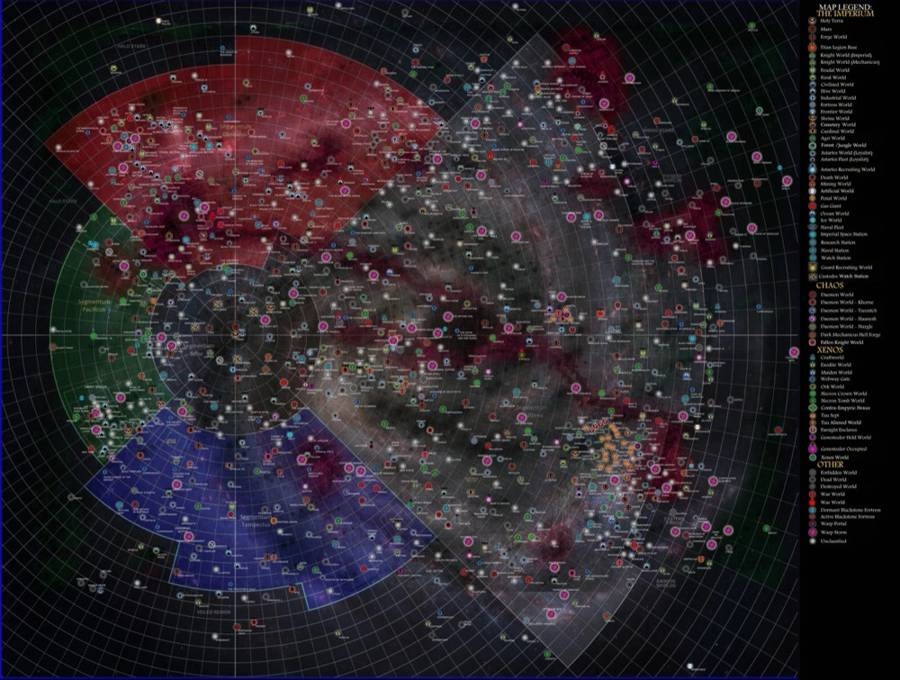

Segmentum
| Segmenta Majoris The five Segmenta of the Imperium | |
|---|---|
 Astra Cartographica chart of the five Segmenta, as drawn before the opening of the Great Rift Artwork © Games Workshop | |
| Type | Highest territorial division of the Imperium of Mankind |
| Number | Five |
| Formalised | M31, by Imperial decree after the Horus Heresy |
| Subdivisions | Sectors, sub-sectors, systems |
| The Segmenta and their fortresses | |
| Segmentum Solar | Galactic centre; Mars |
| Segmentum Obscurus | Galactic north; Cypra Mundi |
| Ultima Segmentum | Galactic east; Kar Duniash |
| Segmentum Tempestus | Galactic south; Bakka |
| Segmentum Pacificus | Galactic west; Hydraphur |
| Military head | A Lord High Admiral in each Segmentum |
A segmentum (plural segmenta, also written segmentae), formally a Segmentum Majoris, is the largest territorial division of the Imperium of Mankind. Imperial space is divided into five segmenta: the Segmentum Solar at the galactic centre, the Segmentum Obscurus to the galactic north, the Ultima Segmentum to the east, the Segmentum Tempestus to the south and the Segmentum Pacificus to the west. Each is divided in turn into sectors, sub-sectors and star systems.[1][2]
The segmenta are, above all, military commands. Each is defended by a segmentum fleet of the Imperial Navy, directed from a great naval base called a Segmentum Fortress and commanded by a Lord High Admiral. The fleets are divided into battlefleets, one for each sector or group of sectors. Each Segmentum Fortress is directed by a senior official of the Administratum styled the Master of the Segmentum, so the civil and naval chains of command meet in the same place.[1][2]
The opening of the Great Rift at the end of the 41st millennium cut across the segmenta and left most of the Segmentum Obscurus and about half of the Ultima Segmentum in the Imperium Nihilus, beyond the reach of Terra. The five-fold division remains the basis of Imperial geography, but it is now overlaid by the distinction between the Imperium Sanctus and the Imperium Nihilus.[3]
History
[edit]Origins
[edit]The five segmenta were created by an Imperial decree of the 31st millennium, issued in the aftermath of the Horus Heresy. The decree names each segmentum, gives it a fortress from which the orders of the Throneworld are carried out, and sets a command staff in each to govern the realms within its bounds.[2]
The decree belongs to the wider settlement known as the Imperial Reformation, overseen by Roboute Guilliman, whose reforms also divided the Legions by the Codex Astartes. The Heresy had shown the danger of placing great forces under one hand, and in the same period the fleet arm of the Imperial Army was re-established as a separate service, the Imperial Navy. Its strength was divided among the five segmenta, each fleet under its own Lord High Admiral.[4][2]
The Segmentum Fortresses
[edit]Each segmentum was given a fortress world to serve as its seat of command, shipyard, arsenal and final refuge. The Segmentum Fortresses are among the most heavily defended places in the Imperium. Their orbital docks can build and refit capital ships, and their archives hold the records of every battlefleet in the segmentum. The Fortress of the Segmentum Solar is the Ring of Iron, the ring of orbital fleet docks around Mars, the foremost of the forge worlds. The segmentum's other great shipyards lie above Luna.[1][2]
The Great Rift
[edit]The Cicatrix Maledictum, the Great Rift, opened at the end of the 41st millennium, after the Fall of Cadia. It tore across the galaxy from the Eye of Terror to the Hadex Anomaly on the Eastern Fringe. The side far from Terra became the Imperium Nihilus, where the light of the Astronomican is no longer easily seen, while the side nearer Terra, kept in the light by the first phase of the Indomitus Crusade, became the Imperium Sanctus. The Imperium Nihilus takes in most of the Segmentum Obscurus and the Ultima Segmentum, so those two commands are split between the halves.[3][5]
Organisation
[edit]Sectors and sub-sectors
[edit]Each segmentum is divided into sectors. A sector's size depends on local demands and the density of stars, but a typical sector covers about seven million cubic light years. Sectors are in turn divided into sub-sectors, which usually consist of between two and eight star systems within about ten light years of one another, a size set by the range at which Navy ships can patrol through the Warp. Because sub-sectors are drawn around worlds and not around volumes of space, much of every sector lies outside any of them. These gaps are called inter-sectors, or more commonly wilderness space, and may contain uncharted systems, alien worlds, nebulae or nothing at all.[1][2]
Command
[edit]The Lord High Admiral of each segmentum commands all the Navy's ships in it. Each sector's share of the fleet forms a battlefleet under a Lord Admiral. The five Lords High Admiral rank equally, but the command of the Segmentum Solar is the oldest and the most prestigious, and one of them often sits among the High Lords of Terra.[4][2]
All Imperial shipping, civil or military, is supervised within the jurisdiction of one of the five segmenta, and the Segmentum Fortress is the base of fleet operations for the whole segmentum.[4][2]
The five Segmenta
[edit]
Segmentum Solar
The Segmentum Solar lies at the heart of the Imperium and contains Terra and the Sol System. It is the most densely settled of the segmenta and the best defended. Its fortress is Mars, and its fleet, Battlefleet Solar, guards the approaches to the Throneworld. The segmentum includes many of the oldest human worlds and the sectors of Armageddon and Necromunda. Battlefleet Solar is the largest of the five battlefleets, and the other four segmenta shield the Segmentum Solar on every side.[1][2]
Segmentum Obscurus
The Segmentum Obscurus lies to the galactic north. It contains the Eye of Terror, the Warp rift in which the Traitor Legions took refuge after the Heresy, and for ten thousand years it was the Imperium's chief line of defence against them. Its Fortress, Cypra Mundi, houses the headquarters of the segmentum fleet and of the Segmentum Command. Because the segmentum is the one most often threatened from the Eye, it holds the greater part of the Imperium's armed forces.[1][6]
The fleet's sector battlefleets fought most of the Black Crusades of Abaddon the Despoiler. The Cadian Gate, the stable passage out of the Eye, was held by the fortress world of Cadia and by Battlefleet Cadia. In the Gothic War of the 12th Black Crusade, the Gothic Sector was cut off by Warp storms from the rest of the Imperium for almost a decade while Battlefleet Gothic fought Abaddon's fleets.[6][4] The Fall of Cadia and the opening of the Great Rift tore the segmentum apart. Much of it now lies in the Imperium Nihilus, and Cypra Mundi lies on the edge of the Rift.[3]
Ultima Segmentum
The Ultima Segmentum, sometimes styled the Segmentum Ultima, lies to the galactic east. It is the largest of the segmenta in size and holds the greatest number of worlds. Its Fortress is Kar Duniash, the site of a Navy academy and of a major shipyard. The Ultima Segmentum contains Ultramar, the realm of the Ultramarines, and the T'au Empire; the Eastern Fringe lies beside it but is not formally part of it. It lies furthest from the light of the Astronomican. Ork empires, pirate conclaves, the T'au and the Tyranid hive fleets threaten it, and Hive Fleet Behemoth and Hive Fleet Kraken both struck it. The vast Ork empire of Octarius also lies within it. About half of the segmentum now lies in the Imperium Nihilus.[1][3][5]
Segmentum Tempestus
The Segmentum Tempestus lies to the galactic south. Its Fortress is Bakka, a mining world whose orbital shipyards have built warships for the Navy since the early years of the Great Crusade. The south of the segmentum holds the Dark Marches, among the last regions absorbed by the Imperium, conquered in the Dark Marches Crusade of the 36th millennium, and the vast unmapped nebulae of the Veiled Region. Battlefleet Bakka was sent to the defence of Macragge in 745.M41, and the Red Corsairs of Huron Blackheart once raided the yards at Bakka itself.[1][4]
Segmentum Pacificus
The Segmentum Pacificus lies to the galactic west, and despite its name it is among the most troubled regions of the Imperium. Its Fortress is Hydraphur. It is known for the campaign of Lord Commander Solar Macharius, who conquered a thousand worlds at the edge of the galaxy. In the Age of Apostasy it was a hub of activity during the Plague of Unbelief, when the Apostate Cardinal Bucharis tried to carve out an empire some decades after the death of Goge Vandire. It was also the base for the Sabbat Worlds Crusade, the Imperial campaign to retake the Sabbat Worlds from Chaos in the 41st millennium. The unmapped Veiled Region lies in and south of it.[1][7][4]
Table of the Segmenta
[edit]| Segmentum | Position | Fortress | Notable regions |
|---|---|---|---|
| Segmentum Solar | Galactic centre | Mars | Sol System, Necromunda, Armageddon |
| Segmentum Obscurus | Galactic north | Cypra Mundi | Eye of Terror, Cadia, Fenris, the Gothic Sector, the Calixis Sector, the Halo Stars |
| Ultima Segmentum | Galactic east | Kar Duniash | Ultramar, Baal, Octarius, the T'au Empire, Catachan |
| Segmentum Tempestus | Galactic south | Bakka | The Dark Marches, the Veiled Region, Ophelia VII |
| Segmentum Pacificus | Galactic west | Hydraphur | Sabbat Worlds, the Veiled Region |
Records disagree on the placement of some worlds near the borders, and the Astra Cartographica has redrawn several boundaries since the opening of the Great Rift.[a]
Timeline
[edit]| Date | Event |
|---|---|
| M31[b] | An Imperial decree creates the five Segmentae Majoris, each with a Segmentum Fortress. In the Imperial Reformation overseen by Roboute Guilliman, the Imperial Navy is re-established as a separate service, divided among five segmentum fleets. |
| M35 | A rival administration on Nova Terra claims the western reaches of the Segmentum Pacificus during the Nova Terra Interregnum. |
| M36 | After the death of Goge Vandire, the Plague of Unbelief of the Apostate Cardinal Bucharis rages in the Segmentum Pacificus. |
| 745.M41 | The Battle of Macragge is fought in the Ultima Segmentum against the Tyranid Hive Fleet Behemoth. |
| 139–160.M41 | The Gothic War is fought in the Segmentum Obscurus, around the Gothic Sector, against Abaddon. |
| 999.M41 | The Fall of Cadia and the 13th Black Crusade tear at the Segmentum Obscurus. |
| 999.M41 | The opening of the Great Rift splits the segmenta between the Imperium Sanctus and the Imperium Nihilus. |
| M42 | The first phase of the Indomitus Crusade restores the light of the Astronomican to the Imperium Sanctus. |
See also
[edit]Notes
[edit]- ^ Boundary worlds such as Armageddon are placed by the Navy in the Segmentum Solar.
- ^ No record gives an exact year.
References
[edit]- ^ a b c d e f g h i Warhammer 40,000: Rulebook (5th Edition). Games Workshop.
- ^ a b c d e f g h i Battlefleet Gothic Rulebook, pg. 86.
- ^ a b c d Dark Heresy Core Rulebook (RPG), pp. 252-253.
- ^ a b c d e f "Imperial Navy". Warhammer 40k Wiki (Fandom).
- ^ a b "Imperium Nihilus". Warhammer 40k Wiki (Fandom).
- ^ a b White Dwarf 140 (UK), "Interstellar Travel".
- ^ Warhammer 40,000: Rulebook (5th Edition). Games Workshop.